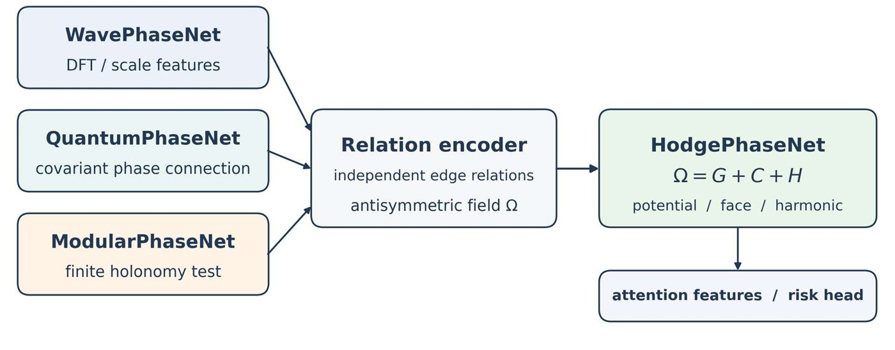
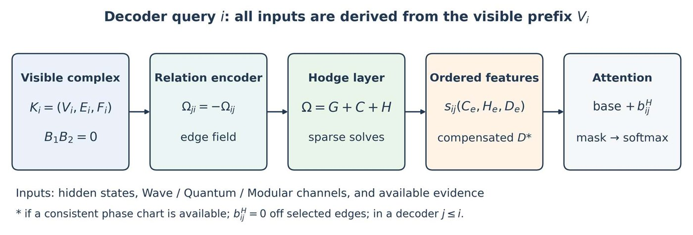
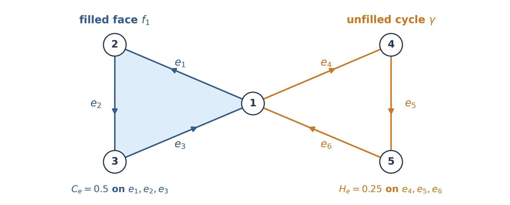

The fourth paper in the PhaseNet series. The "flow of meaning" between sentences, or between claims, is represented as an antisymmetric real-valued field on the edges \(\Omega\) of a finite simplicial complex, and that field is split uniquely and orthogonally into three parts: gradient (a consistent direction), local circulation (small triangular loops) and harmonic (circulation around larger holes). The result is fed back into attention as a bias on ordered query–key pairs. Features from the three earlier papers serve as inputs for building this edge field.
WavePhaseNet made frequency-decomposed semantic representations computable in a standard Transformer, QuantumPhaseNet did the same for gauge-covariant phase connections, and ModularPhaseNet for finite-cyclic phase channels and cycle holonomy. These describe complementary aspects of semantic organization, but on their own they cannot split an observed collection of pairwise relations into three parts: a globally consistent direction, circulation around local compositions, and circulation that keeps going around larger unfilled cycles.
HodgePhaseNet represents semantic transitions as an antisymmetric real-valued 1-cochain \(\Omega\) on a finite oriented simplicial complex. With the vertex–edge incidence matrix \(B_1\) and the edge–face incidence matrix \(B_2\), every \(\Omega\) has a unique orthogonal decomposition \(\Omega = B_1^{\top}\Phi + B_2\Psi + H\) (with \(B_1H=0,\ B_2^{\top}H=0\)). Even when the potentials \(\Phi,\Psi\) are not unique, the three component fields are. The paper gives explicit projectors, a sparse implementation, integrability and gauge results, a verified numerical example, and a reworked attention interface.
The attention bias is defined on permitted ordered query–key pairs and does not depend on how edges are oriented. In a decoder, the complex is built only from the visible prefix, which keeps the causal information boundary intact. Gauge invariance of the attention output holds only when invariant or compensated features are used. Plain differences of vertex embeddings have no local-circulation or harmonic component, so a genuine relation encoder is essential. Local circulation does not by itself mean contradiction, and a harmonic component does not by itself mean missing knowledge. Such interpretations, and any reduction in factual errors, must be confirmed by controlled experiments. This is a mathematical and architectural proposal; it reports no performance results on natural language.
The part explained by differences of vertex potentials \(B_1^{\top}\Phi\). It can represent an overall consistent "direction" or ordering. A consistent error also lands here
Circulation explained by the boundaries of declared triangular faces, \(B_2\Psi\). It is a candidate for broken transitivity, but legitimate mutual definitions produce it too
Flow that accumulates at no vertex and circulates around no face, yet keeps going around a larger unfilled cycle. It may be an unsupported reasoning loop or a deliberate return to an earlier topic
A standard Transformer simply mixes query–key similarities through a softmax. It does not explicitly distinguish "a direction set by a common potential", "local three-way circulation" and "cycles that reduce to no local face". That distinction matters for hierarchies, chains of reasoning and claims supported along several paths.

| Earlier paper | What it provides | What it cannot say on its own |
|---|---|---|
| WavePhaseNet | Scale features from a DFT along the sequence (band energies, reconstruction) | The mapping between bands and semantic roles remains an empirical interpretation |
| QuantumPhaseNet | A comparison rule for local phases (covariant connection, covariant phase residual) | Does not say which part of the whole edge field is a potential difference, which is a face boundary and which is a global cycle |
| ModularPhaseNet | An exact consistency check over a finite group (cycle holonomy) | Answers "consistent or not", but does not apportion edge energy orthogonally, in real numbers, into gradient, local and global parts |
HodgePhaseNet uses these as inputs to a relation encoder, and asks how the encoder's output, a real antisymmetric edge field, decomposes over the declared vertices, edges and composable faces. Thanks to the identity "the boundary of a boundary is zero", this becomes an elementary finite-dimensional Hodge problem.
Let \(K=(V,E,F)\) be a finite 2-dimensional simplicial complex with \(n_0\) vertices, \(n_1\) edges and \(n_2\) triangular faces. Vertices may be tokens, sentences, claims, entities or concepts; the granularity is fixed per layer. Edges are candidate composable relations. A face means that an explicit task rule has judged its three boundary relations to be locally composable.
The local-circulation subspace \(\mathrm{im}\,B_2\) disappears. Every triangular loop is pushed into the harmonic or gradient component
Global cycles the application wanted to keep may vanish too. Which triangles become faces is a substantive assumption and needs ablation
Give every edge and face an arbitrary orientation. In \(B_1\in\mathbb{R}^{n_0\times n_1}\), the column for edge \(e: i\to j\) has \(-1\) at \(i\) and \(+1\) at \(j\); \(B_2\in\mathbb{R}^{n_1\times n_2}\) records the oriented boundary of each face.
\(B_2^{\top}B_1^{\top}\Phi=0\): potential differences always sum to zero around a filled face. The two terms of the Laplacian energy measure divergence at vertices and circulation around declared faces. Both are algebraic quantities, not labels of factual correctness. The choice of orientation is only a choice of coordinates, not a prediction about whether a relation is true or which way it runs in time.
For vertex states \(x_i^{(\ell)}\) at layer \(\ell\), the relation encoder evaluates both directions of an edge, with the orientation metadata reversed accordingly, and antisymmetrizes.
This guarantees \(\Omega_{j\to i}=-\Omega_{i\to j}\). \(f^W\) is band energy and reconstruction (Wave), \(f^Q\) is the covariant phase residual and a real connection (Quantum), \(f^M\) is cyclic-group relations and nearby holonomy (Modular), and \(f^E\) is retrieved evidence and relation type. All are optional, measurable inputs. When gauge results are needed, writing the connection channel as \(\Omega=a+\tilde R\) (with \(\tilde R\) gauge-invariant and orientation-equivariant) gives the transformation law \(\Omega'=\Omega+B_1^{\top}\chi\). An unconstrained encoder does not have this law automatically.
For \(X\in C^0(K;\mathbb{R}^r)\), if \(\Omega=B_1^{\top}X\), then the projections onto the local-circulation and harmonic components are both zero. By the chain condition \(\Omega\in\mathrm{im}\,B_1^{\top}\) is orthogonal to \(\mathrm{im}\,B_2\), and by definition it is also orthogonal to \(\ker L_1\).
This is a heavy design constraint: a field built only from differences of vertex embeddings cannot represent circulation, however the downstream Hodge layer is tuned. It is the real-valued counterpart of the ModularPhaseNet pitfall in which "building a connection from ratios of vertex phases makes every cycle product identically 1".
For a fixed \(K\), every \(\Omega\in C^1(K;\mathbb{R}^r)\) has a unique orthogonal decomposition into component fields.
The potentials \(\Phi,\Psi\) need not be unique, but \(G,C,H\) are. The proof uses \(\langle B_1^{\top}\Phi,B_2\Psi\rangle_F=\mathrm{tr}(\Phi^{\top}B_1B_2\Psi)=0\) and the fact that the orthogonal complement of \(\mathrm{im}\,B_1^{\top}\oplus\mathrm{im}\,B_2\) is \(\ker B_1\cap\ker B_2^{\top}=\ker L_1\).
For large sparse complexes, dense projectors are never formed; instead the following two normal equations are solved column by column.
\(\Phi\) is made mean-zero on each connected component, or one vertex is pinned; the kernel of the face system is handled with the minimum-norm solution. Preconditioned conjugate gradients, LSQR or sparse factorizations can be used, but tolerances must be recorded, and an approximate solution must not be called an exact orthogonal projection.
With real coefficients, \(\dim\ker L_1=\beta_1(K)\) (the first Betti number). The harmonic subspace exists whenever the topology allows it, but a given field may still have zero projection onto it. Neither \(\beta_1>0\) nor \(\|H\|>0\) proves missing knowledge on its own.
THEOREM 2 On a connected \(K\), \(\Omega=B_1^{\top}\Phi\) (with \(\Phi\) unique up to a constant) if and only if \(C=H=0\). The local condition \(B_2^{\top}\Omega=0\) removes the local-circulation component but not \(H\), so as long as unfilled cycles exist, local consistency does not imply that a global potential exists.
With positive definite diagonal matrices \(W_k\) defining the inner products \(\langle u,v\rangle_{W_k}=u^{\top}W_kv\), the weighted adjoints and Laplacian are as follows.
\(C^1=\mathrm{im}\,d_0\oplus_{W_1}\mathrm{im}\,\delta_2^{W}\oplus_{W_1}\ker L_1^{W}\). Setting a face weight exactly to zero changes the rank and can change \(\beta_1\), whereas a small positive weight changes only the metric, not the cohomology dimension. To keep the topology fixed, keep candidate face weights strictly positive during differentiation as well.
For a chosen layer and head, a bounded candidate edge set is built from sequence adjacency, type-matched knowledge or evidence links, and a small number of pairs selected by the base attention scores. A face is added only when all three edges are present and an explicit composition rule allows it. That rule must be decided from information available on the input side, not from held-out evaluation labels. The complex may be shared across heads, but \(\Omega^{(\ell,h)}\) and its decomposition are per head.
With no faces, \(C=0\); if the complex is a tree, both \(C\) and \(H\) are zero. This must not be read as "no contradiction detected"; it is reported as such.

The local features of edge \(e\) are the oriented local-circulation and harmonic values \((C_e,H_e)\) together with their orientation-independent norms. The signed local circulation of face \(f\), \(\kappa_f=(B_2^{\top}\Omega)_f\), is aggregated onto edges, and component ratios are also used as features.
The raw gradient \(G=P_G\Omega\) changes under gauge transformations of the connection. If token phases \(\theta\) are available in a consistent real chart and transform as \(\theta'=\theta+\chi\), the compensated gradient \(D\) is gauge-invariant. If neither is available, \(G\) is left out of any bias claimed to be gauge-invariant. Using \(\|G_e\|\) or \(\rho_G\) does not solve the problem (they change with the gauge as well).
When query \(i\) and key \(j\) share an edge \(e(i,j)\), \(s_{ij}=+1\) if the stored orientation is \(i\to j\), and \(-1\) otherwise. Every signed quantity is multiplied by \(s_{ij}\) before use.
Self-pairs have \(b^H_{ii}=0\). With \(\gamma_h=0\) the layer reduces exactly to the original attention layer. The Hodge edge set only adds a bias to selected pairs; it need not replace the Transformer's dense permission pattern (making the mask sparse as well is a separate intervention to be compared). The sign of the bias is learned from task evidence; neither positive circulation nor harmonic magnitude carries a universally negative meaning.
Reversing edge orientations, with the incidence matrices and edge field transformed consistently, leaves the bias of every ordered pair unchanged. With sign matrices \(S_1,S_2\), \(B_1'=B_1S_1,\ B_2'=S_1B_2S_2,\ \Omega'=S_1\Omega\) gives \(G,C,H\) multiplied by \(S_1\), which cancels the flip in \(s_{ij}\).
If \(\Omega'=\Omega+B_1^{\top}\chi,\ \theta'=\theta+\chi\), and all other inputs and the base logits are gauge-invariant, then the features, the bias and the output \(y_i\) are invariant. By orthogonality, \(P_C\Omega'=C,\ P_H\Omega'=H,\ P_G\Omega'=G+B_1^{\top}\chi\), hence \(D'=D\). With the raw \(G\), the claim does not hold in general.
If the Hodge field for an early query were computed using later tokens as well, the usual causal mask alone would not stop the leak. The query at position \(i\) uses only the complex \(K_i=(V_i,E_i,F_i)\) built from the visible prefix \(V_i=\{1,\dots,i\}\).
Edge endpoints, faces, Wave features, phase features, residue features and relation labels must all be measurable from that prefix. Even in teacher-forced training, the features at position \(i\) must come from \(K_i\), not from a whole-sequence computation hidden behind a mask. At inference time, prefix solutions or verified incremental updates can be reused.
This requirement raises the per-token cost in a naive implementation. When batching, restricting to some layers, using coarse claim-level graphs or approximate incremental updates, the approximation error is reported from measurements. A bidirectional encoder may use the whole observed input, and cross-attention may use the whole observed source, but the target side being generated is restricted to the prefix.
In an exact Hodge layer, reconstruction and orthogonality losses are zero up to solver error, so they are treated as diagnostics, not training signals. A blanket penalty on \(\|C\|\) or \(\|H\|\) would also suppress legitimate cycles, so none is imposed. A converged sparse solver can be differentiated implicitly, and a fixed number of iterations can be unrolled (leaving a tolerance-dependent error). No gradient flows through discrete top-\(k\) membership decisions.
A fast approximate version learns \(\hat\Phi,\hat\Psi,\hat H\), sets \(\hat G=B_1^{\top}\hat\Phi,\ \hat C=B_2\hat\Psi\), and is distilled toward the exact solution. It is essential to parametrize \(\hat G\) and \(\hat C\) through the incidence matrices; merely "imposing \(B_2^{\top}\hat G=0\)" does not keep harmonic content out. The approximate version carries no exact-decomposition guarantee until measured error supports it.
For future labels of "unsupported or incorrect output", visible-prefix features (\(\rho_C\), \(\rho_H\), \(\|B_2^{\top}\Omega\|_F^2\), \(\mathrm{Hol}_q\), evidence support, semantic uncertainty) are aggregated, and a learned score \(s_t\) is mapped to a probability \(\hat p_t=\mathrm{Calibrate}(s_t)\) on a separate calibration set. Temperature scaling and isotonic regression are evaluated by Brier score and negative log-likelihood. If conformal risk control is used, its coverage guarantee must be stated separately; it does not turn a raw score into a calibrated probability. The score is an empirical predictor of the labeled evaluation targets, not an oracle of truth.
\(r\) is the number of channels and \(T\) the number of sparse iterations. Relation encoding, complex construction and ordinary attention come on top of this. Limiting edges to \(O(kn_0)\) keeps the Hodge solve sparse, but the quadratic cost of dense attention remains. Solving all \(n_0\) prefixes exactly and separately during causal decoding multiplies the work further. The paper asks for reports of wall-clock time and peak memory, not asymptotic counts of sparse matrix products.
This is a statement about the decomposition, not a guarantee that every learned semantic feature is gauge-invariant. Finite-group holonomy is kept in an exact residue channel. A principal real representative \(\tilde a_e=\mathrm{wrap}_{(-1/2,1/2]}(a_e/q)\) can be fed into a real channel, but crossing the wrap boundary creates a discontinuity and changes the real lift being used. Residue holonomy and real component energies are evaluated side by side.
This does not imply stability when \(E\) or \(F\) changes, when the solver is truncated, or when a nonlinear model is trained. No global Lipschitz continuity of the whole Transformer is claimed either.
If the permitted logits are finite and \(\|v_j\|_2\le B_V\) for every permitted key, then \(\|y_i\|_2\le B_V\). Softmax weights are nonnegative and sum to 1, so the output is a convex combination of value vectors. This is the same argument as Theorem 6 of ModularPhaseNet and does not claim improved training stability or semantic validity.
Vertices \(V=\{1,2,3,4,5\}\), oriented edges \(e_1:1\to2\), \(e_2:2\to3\), \(e_3:3\to1\), \(e_4:1\to4\), \(e_5:4\to5\), \(e_6:5\to1\). Only the first triangle \((1,2,3)\) is filled as a face; the second triangle \((1,4,5)\) is left unfilled.

\(B_1B_2=0\). The graph is connected with \(\mathrm{rank}\,B_1=4,\ \mathrm{rank}\,B_2=1\), so \(\beta_1=6-4-1=1\). Choosing \(\Phi=(0,1,2,-1,1)^{\top}\), \(\Psi=(0.5)\), \(H=(0,0,0,0.25,0.25,0.25)^{\top}\) gives the following.
| Component | \(e_1\) | \(e_2\) | \(e_3\) | \(e_4\) | \(e_5\) | \(e_6\) | Squared norm |
|---|---|---|---|---|---|---|---|
| \(G=B_1^{\top}\Phi\) | 1 | 1 | −2 | −1 | 2 | −1 | 12 |
| \(C=B_2\Psi\) | 0.5 | 0.5 | 0.5 | 0 | 0 | 0 | 0.75 |
| \(H\) | 0 | 0 | 0 | 0.25 | 0.25 | 0.25 | 0.1875 |
| \(\Omega=G+C+H\) | 1.5 | 1.5 | −1.5 | −0.75 | 2.25 | −0.75 | 12.9375 |
\(B_1H=B_2^{\top}H=0\); \(G,C,H\) are mutually orthogonal, and the sum of squared norms \(12+0.75+0.1875\) equals \(\|\Omega\|^2=12.9375\) exactly. Pseudoinverse projection recovers each component from \(\Omega\) to floating-point precision (re-checked with numpy while preparing this explainer, and it matches). The filled triangle carries the local circulation, and the unfilled triangle carries the remaining harmonic cycle. The example illustrates an algebraic distinction; it makes no semantic judgment about either cycle.
| Mechanism | Primary endpoint | Essential control |
|---|---|---|
| Algebraic recovery | Component error and orthogonality | Known fields and topology changes |
| Hierarchy | Direction and graded entailment (WordNet, HyperLex) | Relation encoder of the same size |
| Local cycles | AUPRC for legitimate cycle vs contradiction (built from FEVER, ANLI) | Raw face sums and residue holonomy |
| Global cycles | Legitimate topic return vs inconsistency | Local consistency and graph size |
| Factuality | Supported atomic facts and selective risk (TruthfulQA, FActScore) | Same evidence and inference budget |
| Calibration | Brier score and risk–coverage | Separate calibration set |
Means, spread and paired confidence intervals are reported over several independent seeds, with multiple-comparison correction on the pre-declared primary comparisons. For rare contradictions, AUPRC is required, not only AUROC. Extra parameters, FLOPs, sparse-solver iterations, peak memory and generation latency are reported too. Changing how faces are filled moves energy between \(C\) and \(H\) without changing the text, so semantic claims must be robust to reasonable changes in how the complex is built.
| Type | Content | Status |
|---|---|---|
| THM | Unique three-term orthogonal decomposition on a fixed complex (Theorem 1) | proved |
| THM | Global potential ⇔ \(C=H=0\) (Theorem 2) | proved |
| THM | A field made only of vertex differences has no circulation (Proposition 1) | proved |
| THM | Bias independent of edge orientation (Proposition 2); conditional gauge invariance (Proposition 3) | proved |
| THM | Non-expansive projectors; boundedness of the attention output (Theorem 3) | proved |
| THM | All numbers in the five-vertex example | exact (verified) |
| EMP | \(C,H\) separate legitimate cycles from problematic ones | hypothesis, untested |
| EMP | Fewer factual errors and better risk calibration | hypothesis, untested |
| NOT CLAIMED | The learned complex is the one correct model of language | not claimed |
| NOT CLAIMED | Algebraic circulation is an error label | not claimed |
| NOT CLAIMED | A harmonic component means missing knowledge | not claimed |
| NOT CLAIMED | Faster than dense attention | not claimed |
HodgePhaseNet gives the ideas of the PhaseNet series a concrete mathematical meeting place. Spectral features, together with covariant and finite-group phase relations, shape an antisymmetric edge field, and its gradient, local-circulation and harmonic projections separate three kinds of organization.
Returning this field to Transformer attention requires ordered-pair signs, a visible prefix for causal decoding, a gauge-aware choice of gradient features, and explicit solver and topology checks. The algebra and the five-vertex example are exact; semantic gains and risk calibration remain falsifiable hypotheses.
The next empirical steps are synthetic recovery with an auditable sparse reference implementation, comparison against matched baselines on natural language, and evaluation on independently labeled legitimate and illegitimate cycles.